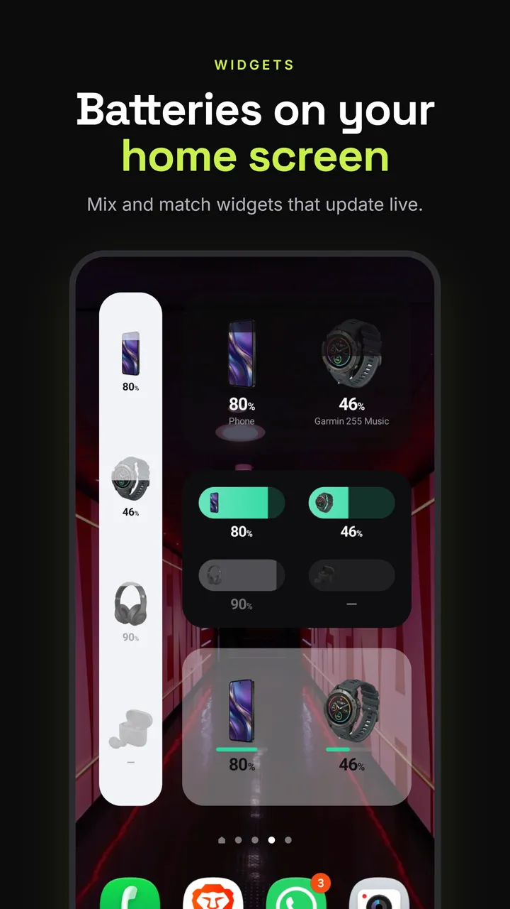
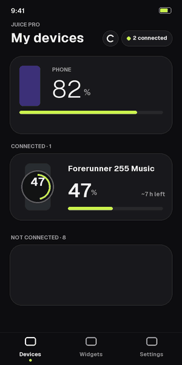
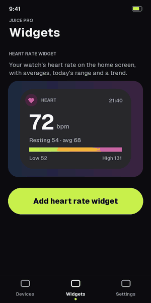

New in Juice 3.4.1. Customise the heart rate widget (accent colour, light or dark, opacity) and tap it to jump straight to your heart rate. A refresh button and full-width card on My devices, a redesigned heart rate section, and fixes to the icon picker and widget picker. See the full release notes.
On this page: Watch setup · Heart rate · Widgets: add, set up and change · Heart rate widget · Troubleshooting · Release notes
About Juice
Juice shows battery and connection health for your phone, Bluetooth devices and Garmin watch in one Android app, with resizable home-screen widgets. The Garmin support comes from a small companion app that runs on your watch.


How it works
Garmin watches don't share their battery over normal Bluetooth. Instead, the Juice app on your watch reads its battery and sends it to your phone through the Garmin Connect app, straight away when opened and then every 5 minutes. Juice on your phone shows it in your widgets. Nothing is sent anywhere else.
What you need
- Juice Pro installed on your Android phone (Android 12 or newer).
- The Garmin Connect app on your phone, with your watch already paired.
- The Juice watch app from the Connect IQ Store. It's built for every Garmin watch that can run watch apps, including Forerunner 255/265/955 and Fenix 7/8.
Watch setup steps
- Check your watch is connected. Open Garmin Connect on your phone and make sure your watch shows as connected.
- Install the watch app. Open the Juice page in the Connect IQ Store, or search for Juice (developer sabrkei) in the Connect IQ Store inside Garmin Connect, and install it on your watch.
- Sync. Let Garmin Connect sync so the app lands on your watch.
- Open Juice on the watch once. It sends its battery to your phone straight away, then every 5 minutes.
- Add a widget. In Juice on your phone, add a widget (or edit one) and choose your Garmin watch from the device list.
- Check it's working. Open Juice's Settings → Garmin watches. It should say your watch is sending its battery.


Check your settings
For reliable updates, the Settings screen in Juice should show Bluetooth access granted, background updates set to Unrestricted, and live updates on. Juice Pro shows as unlocked once purchased.

Heart rate from your Garmin watch
With Juice Pro, Juice also shows your watch's heart rate: the latest reading, 5-minute and hourly averages, today's lowest, highest and average, and your resting heart rate. It uses the same Juice watch app, so there is nothing extra to install, but the watch app needs to be up to date.
Turn it on
- Update the watch app. Open the Juice page in the Connect IQ Store (link above) and update Juice on your watch, then let Garmin Connect sync.
- Open Juice on the watch once. It sends its battery and heart rate to your phone, then every 5 minutes.
- Open your watch in Juice. On the My devices screen, tap your Garmin watch. Scroll down to the Heart rate card.
- Switch on “Show heart rate from my watch”. If it says it is waiting, give it up to five minutes and open Juice on the watch again.

Widgets: add, set up and change
Juice has two home-screen widgets: the battery widget for your phone, Bluetooth devices and watch, and (Juice Pro) the heart rate widget. Both resize on the home screen, and both open Juice when you tap them.
Battery widget
- Add it. In Juice open the Widgets tab, choose a style and tap Add to home screen. Or long-press your home screen, choose Widgets, find Juice batteries and drag it out.
- Pick its devices. The settings screen opens when you place it. Tick the devices to show (up to 8: your phone, Bluetooth devices and Garmin watches).
- Make it fit. Stretch or shrink it on the home screen, from 1×1 up to 4×4. One widget does every shape: a row, a column or a grid.
- Change it any time. In Juice, Widgets tab → Edit widget (or long-press the widget on your home screen and choose its settings, if your launcher offers that).
In the widget settings you can change the style (ring, capsule, battery, blocks, line, icon or cards), light, dark or follow-the-phone appearance, the accent, low-battery and charging colours, the background colour and opacity, whether device names show, and, with Juice Pro, 3D icons in their own colours and a small heart rate line under your watch's battery.
Heart rate widget (Juice Pro)
A separate widget for your watch's heart rate. Stretch it from 1×1 to 4×4 and it shows more as it grows:
- Small (1×1, 2×1): a heart and the latest bpm.
- Wide (3×1, 4×1): bpm plus up to three of today's figures.
- Square (2×2, 3×2): bpm, resting and average, and today's low-to-high range bar.
- Large (4×2 and up): everything the watch sends, a trend line and the range bar.
Add and set it up
- Add it. In Juice open Widgets and tap Add heart rate widget (below the battery widget), or find Juice heart rate in your home screen's widget list. It only appears once Juice Pro is unlocked.
- Choose how it looks. The settings screen opens when you place it: pick an accent colour (or any custom colour), Auto, Light or Dark, and the background opacity. Turn on a custom background colour if you want one.
- Change it later. Long-press the widget and choose its settings, or remove it and add it again. Settings are kept per widget, so each can look different.
- Tap it. Tapping the widget opens Juice on your watch page, already scrolled to the heart rate section.
An older reading stays on the widget but greyed, so it never passes for a live number. Until your watch has sent a reading, the widget shows sample numbers in the Widgets tab and a prompt to open Juice on the watch.

Troubleshooting
"No watch has reported yet"
Open the Juice app on the watch once, make sure Garmin Connect shows the watch connected, then tap a Juice widget on your phone to ask for a fresh reading.
Watch missing from the device list
Open Garmin Connect, wait for it to sync, then reopen Juice. Juice only sees watches Garmin Connect knows about.
Battery looks stale
Android may be stopping Juice in the background. In Android settings set Juice's battery usage to Unrestricted, and keep Garmin Connect allowed to run in the background too.
No heart rate showing
Update the Juice watch app from the Connect IQ Store, open it on the watch once, and switch on Show heart rate from my watch in the Heart rate card on your watch's page. It can take up to five minutes. A watch without a heart rate sensor, or one that hasn't recorded a recent reading, sends none.
The heart rate widget isn't in my widget list
It is part of Juice Pro. Once Pro is unlocked, open Juice once and it appears in the widget list. Restart your launcher if it still isn't there.
The heart rate number is greyed out
That reading is older than about half an hour. Open Juice on the watch, check Garmin Connect shows the watch connected, and wait a few minutes.
My widget changes didn't show
Open Juice once so the widget refreshes. For the battery widget use Widgets → Edit widget; the heart rate widget's settings open from the widget itself.
Still stuck?
Reinstall the Juice watch app from the Connect IQ Store, force-stop Garmin Connect and open it again, then repeat steps 4–6.